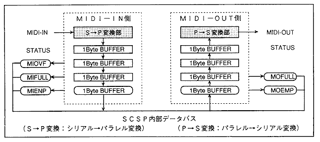
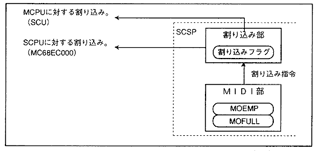

★HARDWARE Manual
★SCSPユーザーズマニュアル
★HARDWARE Manual
★SCSPユーザーズマニュアル
▲戻る
｜ 進む▼
SCSPユーザーズマニュアル/4.2 音源部レジスタ
■MIDIレジスタ
- SCSPは、31.25Kbpsの転送速度を持つMIDI用のシリアルインタフェースを搭載しています。ただし、「MIDI用周辺回路」および「MIDI用DINコネクタ」を搭載していないので、MIDIを使用したアプリケーションを作成することはできません。
MIDIのインタフェースブロック図を、図4.53に示します。
図4.53 MIDI-I/Fブロック図

- MIBUF[7:0](R) ; Midi Input BUFfer
- MIDI入力データバッファです。MIDI-IN側の受信は、外部から転送されたデータが自動的にMIDI-INバッファ"MIBUF"に取り込まれます。
- MIOVF(R) ; Midi Input OVer-Flow
- MIDI-INバッファの全てにデータが取り込まれている状態でMIDI-INにデータが転送されると"MIOVF"が"1B"となり、オーバフローを起こしたことを表します。オーバフローは、MIDIのコミュニケーションが正常に行われない状態となるので、
MIDI通信エラーとなります。
- MIFULL(R) ; Midi Input FULL
- MIDI-INバッファの４バイト全てにデータが取り込まれている場合は"MIFULL"が"1B"となり、バッファに空き領域が無いことを表します。
- MOFULL(R) ; Midi Output FULL
- データの出力MIDI-OUTバッファの４バイト全てにデータが入っている場合は"MOFULL"が"1B"となり、バッファに空き領域が無いことを表します。
- MOEMP(R) ; Midi Output EMPty
- MIDI-OUTバッファ内のデータが全て吐き出されているとき、およびMIDIバッファに何もデータが転送されなかった場合は、"MOEMP"が"1B"となり、バッファが空であることを表します。
同時に、割り込みによって空であることをCPUに知らせることも可能です。
- 図4.54にMIDI-OUTと割り込み発生部を示します。
図4.54 MIDI OUT部と割り込み発生部

- MOBUF[7:0](Ｗ) ; Midi Output BUFfer
- MIDI出力データバッファです。MIDI-OUT側の転送は、転送したいデータを"MOBUF"に書き込みます。その後、データは自動的に転送されます。
▲戻る
｜ 進む▼
★HARDWARE Manual
★SCSPユーザーズマニュアル
Copyright SEGA ENTERPRISES, LTD., 1997